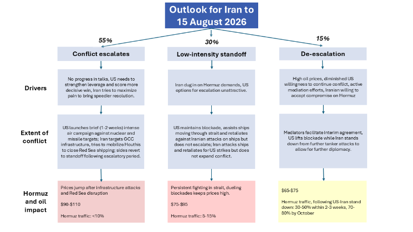
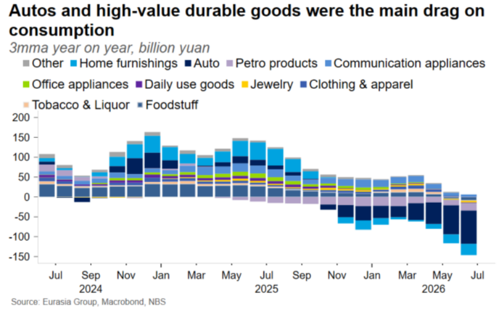
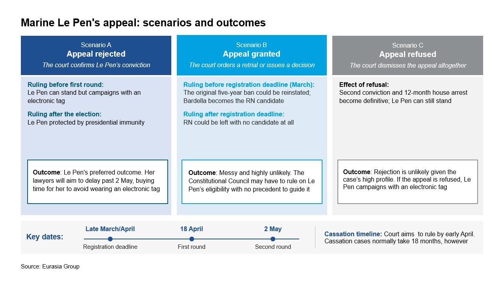

|
16 Jul 2026 07:50 EDT |
||
|
|||
|
|||
summary
|
|||
the top lineIran, MENA Crisis—Escalation likely as Iran sees path to Hormuz control
 China—GDP slump deepens divide between exports and domestic demand

France—Far-right odds grow despite legal tangle

UK—Farage’s by-election gamble could trash Reform’s momentum
Senegal—Clash between Sonko and Lo raises the risk of government falling
Upcoming conference calls |
||
eg in depthMexico, US—Further unilateral US actions likely as Mexico rejects DEA accusations: President Claudia Sheinbaum’s administration rejected Drug Enforcement Administration (DEA) Administrator Terrance Cole’s claim that the Mexican government and drug cartels are “inseparable,” arguing that the allegation is unfounded and ignores the administration’s recent progress against organized crime. US security agencies will continue making such accusations as Sheinbaum resists calls to extradite public officials accused of ties to criminal organizations. The exchange comes as the US intensifies pressure on the Sheinbaum administration to investigate and prosecute politicians allegedly tied to organized crime. The dispute will place further strain on bilateral security cooperation as US pressure over alleged cartel-government links intensifies, increasing the likelihood of additional unilateral actions by US law enforcement agencies. Read more here. Reach out to discuss: mexico@eurasiagroup.net.
US, Russia—Graham sanctions bill likely to pass with discretion for White House: A sanctions package against Russia championed by late Senator Lindsey Graham (R-SC) will likely be passed in the coming weeks. The main hold-up is fear that the legislation creates tariff authorities that President Donald Trump will use beyond the bill’s original scope. While these concerns are likely to be overcome by strong bipartisan support and congressional interest in countering Russia, continued hesitance caps our odds of passage at 60%. Indications that additional changes are required would lower these odds. The bill would sanction Russia’s leadership, energy sector, shadow fleet, and financial sector, and give Trump the authority to implement 100% tariffs on the top buyers of Russian oil, though enforcement and implementation are at Trump’s discretion. Trump is unlikely to go after larger targets like India and China, and smaller nations are more likely to see the tariffs utilized as a threat to generate concessions on one-off issues. Read more here. Reach out to discuss: unitedstates@eurasiagroup.net.
Upcoming events:
The EG Daily Brief is compiled by Jens Larsen, Lucy Eve, Babak Minovi, Pietro Guglielmi, Rahul Bhatia, Marilia Sirio, Joseph Craven, Martina Silva, and Trista Kelley, with help from Marina Tavares, and Astral Betteridge. |
||
closing quipMy job is to demonstrate that British democracy is wonderful and unique in the entire Cosmos."—Count Binface, the alter ego of comedian Jon Harvey and Nigel Farage's main rival in the forthcoming Clacton by-election |
|||
 |
|||